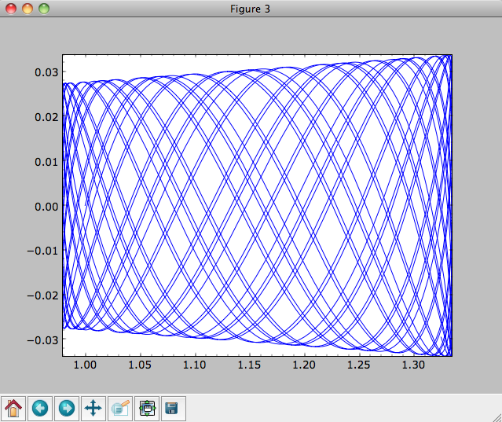

Introduction¶
The most basic features of galpy are its ability to display rotation curves and perform orbit integration for arbitrary combinations of potentials. This section introduce the most basic features of galpy.potential and galpy.orbit.
Rotation curves¶
The following code example shows how to initialize a Miyamoto-Nagai disk potential and plot its rotation curve
>>> from galpy.potential import MiyamotoNagaiPotential
>>> mp= MiyamotoNagaiPotential(a=0.5,b=0.0375,normalize=1.)
>>> mp.plotRotcurve(Rrange=[0.01,10.],grid=1001)
The normalize=1. option normalizes the potential such that the radial force is a fraction normalize=1. of the radial force necessary to make the circular velocity 1 at R=1.
Similarly we can initialize other potentials and plot the combined rotation curve
>>> from galpy.potential import NFWPotential, HernquistPotential
>>> mp= MiyamotoNagaiPotential(a=0.5,b=0.0375,normalize=.6)
>>> np= NFWPotential(a=4.5,normalize=.35)
>>> hp= HernquistPotential(a=0.6/8,normalize=0.05)
>>> from galpy.potential import plotRotcurve
>>> plotRotcurve([hp,mp,np],Rrange=[0.01,10.],grid=1001,yrange=[0.,1.2])
Note that the normalize values add up to 1. such that the circular velocity will be 1 at R=1. The resulting rotation curve is approximately flat. To show the rotation curves of the three components do
>>> mp.plotRotcurve(Rrange=[0.01,10.],grid=1001,overplot=True)
>>> hp.plotRotcurve(Rrange=[0.01,10.],grid=1001,overplot=True)
>>> np.plotRotcurve(Rrange=[0.01,10.],grid=1001,overplot=True)
You’ll see the following

As a shortcut the [hp,mp,np] Milky-Way-like potential is defined as
>>> from galpy.potential import MWPotential
Orbit integration¶
We can also integrate orbits in these potentials. Going back to a simple Miyamoto-Nagai potential, we initialize an orbit as follows
>>> from galpy.orbit import Orbit
>>> mp= MiyamotoNagaiPotential(a=0.5,b=0.0375,amp=1.,normalize=1.)
>>> o= Orbit(vxvv=[1.,0.1,1.1,0.,0.1])
Since we gave Orbit() a five-dimensional initial condition [R,vR,vT,z,vz], we assume we are dealing with a three-dimensional axisymmetric potential in which we do not wish to track the azimuth. We then integrate the orbit for a set of times ts
>>> import numpy
>>> ts= numpy.linspace(0,100,10000)
>>> o.integrate(ts,mp)
Now we plot the resulting orbit as
>>> o.plot()
Which gives
The integrator used is not symplectic, so the energy error grows with time, but is small nonetheless
>>> o.plotE(xlabel=r'$t$',ylabel=r'$E(t)/E(0)$')
When we integrate for much longer we see how the orbit fills up a torus (this could take a minute)
>>> ts= numpy.linspace(0,1000,10000)
>>> o.integrate(ts,mp)
>>> o.plot()

As before, we can also integrate orbits in combinations of potentials. Assuming mp, np, and hp were defined as above, we can
>>> ts= numpy.linspace(0,100,10000)
>>> o.integrate(ts,[mp,hp,np])
>>> o.plot()
Energy is again approximately conserved
>>> o.plotE(xlabel=r'$t$',ylabel=r'$E(t)/E(0)$')
Escape velocity curves¶
Just like we can plot the rotation curve for a potential or a combination of potentials, we can plot the escape velocity curve. For example, the escape velocity curve for the Miyamoto-Nagai disk defined above
>>> mp.plotEscapecurve(Rrange=[0.01,10.],grid=1001)

or of the combination of potentials defined above
>>> from galpy.potential import plotEscapecurve
>>> plotEscapecurve([mp,hp,np],Rrange=[0.01,10.],grid=1001)